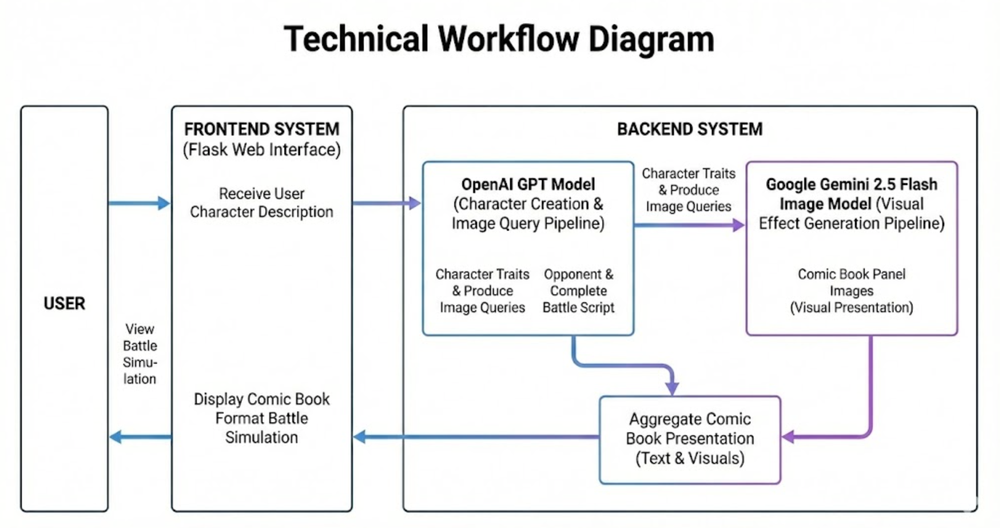
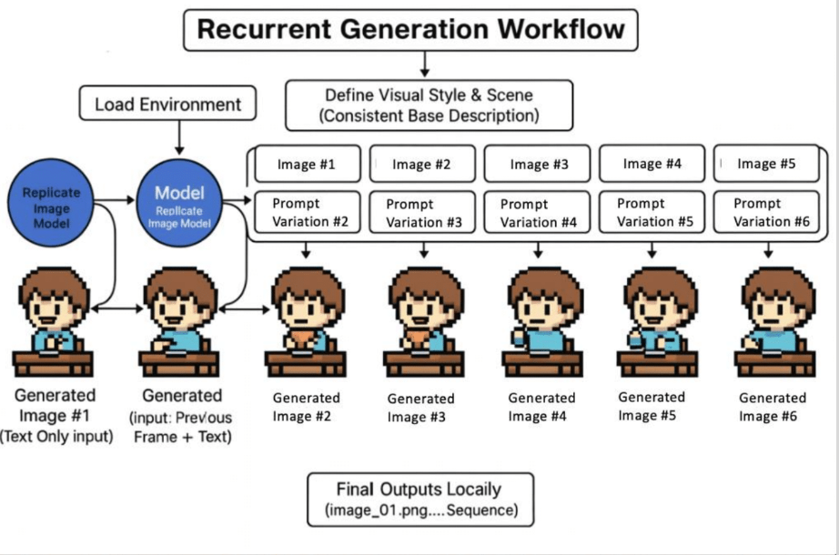
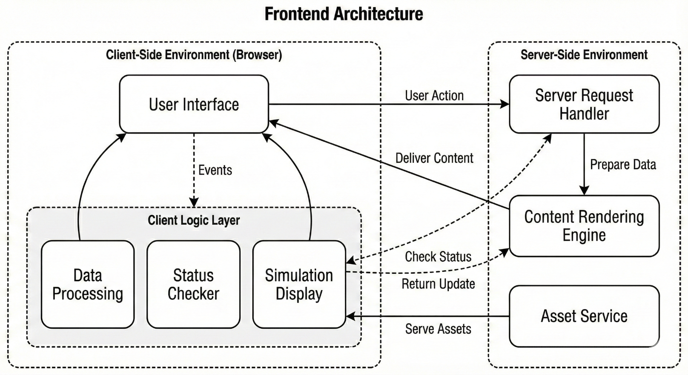

1.0Introduction
This technical document details the core architectures of Multiverse All-Star Battlefront (MASB), a battle simulation game driven by generative AI. MASB is designed as a highly adaptable simulation where the user simply describes their character. Our backend architectures then generate a corresponding opponent character and a complete battle simulation, which is then presented to the user in a comic book format. We created this particular game because we think that users want to experience the randomness and the joy of seeing their characters come to life. We believe the future of gaming is where imagination collides with reality, and we hope MASB can demonstrate what is possible when generative AI is integrated into games and create a truly boundless narrative experience.
2.0General Architecture


The above diagram demonstrates the high-level workflow pipeline of our backend and frontend systems, as well as their communication channels. In the backend, we utilize a Large Language Model and a generative image model to power the game. Specifically, we apply the OpenAI GPT model to power the character creation pipeline, while utilizing the Google Gemini 2.5 Flash Image model as the main visual effect generation pipeline. Section 2.0 will outline the detailed architecture of our backend system. For the frontend system, we chose Flask. Flask is a versatile, lightweight Python-based web interface. Its lightweight design allows us to run HTML directly and display the highly visual comic book presentation on the web interface. We design the frontend to receive the user description. Upon receiving the user’s instruction, the backend will first process the character traits and then produce image queries for the image generation model. The frontend will then display both the text description of the character and the visual presentation of the battle. This carefully designed workflow allows users to imagine freely and enjoy the randomness and versatility of the game.
2.1Backend


The backend team designed the Recurrent Generation Workflow to power the visual generation pipeline. The idea is similar to a Recurrent Neural Network (RNN). In an RNN, every current state would preserve the prior states' information. This principle effectively gives the RNN a form of internal memory crucial for processing sequences. In our image generation layer, we want to provide the image generation model with some sort of memory that preserves the prior image traits to enable a consistent visual effect. Derived from our experimental results, we discovered that by passing the prior image into the image model, it can integrate the visual data of the prior, already-generated images in order to create the next image. This recurrent pipeline design of visual context allows the system to successfully maintain critical elements like character appearance, lighting, environment, and even hairstyle and color code (similar to what you can see in the diagram above). This design enables a coherent visual effect across all generated images.
2.2Frontend


The frontend team chose Flask as the primary frontend server-side framework for MASB. It is engineered to be lightweight but very visually appealing and immersive. The core functionality of the frontend is to bridge the gap between the user’s input text and the backend generation outputs (both images and texts). We utilize HTML as the primary framework to dynamically read and showcase data, such as characters’ statistics, the battle logs, as well as the generated sequential images. To manage the dynamics of the generated outputs, both images and texts, we utilized a client-side layer within the CharacterStats.html interface. This interface uses raw and standardized JSON data directly updated from the backend, which can map different keys and variables of the game for efficient interpretation from the frontend. The primary comic book style interface is the simulation.html interface. It is designed to render the battle narrative (generated text) and its corresponding battle visualizations (generated images) in a sequential way. Since the image generation pipeline is heavy in its computation and takes some time to process everything, we also designed a loading page and a mini-game to play while the users are waiting for their creativity to come to life. While the users are waiting for their generated outputs, we designed a specialized polling architecture for loading phrases that actively queries the backend status and actively reads the generated files from the backend. Once every generation is complete, the frontend will organize the results and battle visualizations. Finally, the users would be able to view their battle statistics on the very last page. This frontend architecture ensures that the dynamic assets from the backend can be successfully loaded while providing a fun and interactive way for users to be creative.
2.3Game Mechanism
The core game mechanism of Multiverse All-Star Battlefront (MASB) is a turn-based battle simulation driven entirely by AI-generated characters and rules. Unlike traditional games that rely on pre-authored characters, stats, and combat logic, MASB dynamically constructs its gameplay logic at runtime based on the user’s character description.
Once the user submits a character description through the frontend, the backend’s language model interprets the text and extracts high-level character traits such as personality, combat style, strengths, weaknesses, and thematic identity. Rather than assigning attributes in isolation, the system grounds this interpretation by comparing the described character against a reference space of existing or archetypal characters. Through this comparative process, the model estimates relative power levels and behavioral tendencies, which are then translated into structured game attributes such as health, attack power, defense, speed, and special abilities.
This comparison-based mapping step helps normalize character strength, preserve balance, and reduce extreme or incoherent stat assignments. By anchoring free-form natural language input to known character patterns, the system effectively bridges imaginative descriptions and deterministic game logic, allowing creative character concepts to be transformed into playable and mechanically consistent fighters.
After the player character is generated, the system procedurally creates an opponent using the same pipeline to ensure balance and narrative contrast. The battle itself is executed as a deterministic turn-based simulation, where each turn follows a predefined resolution order (e.g., initiative calculation, action selection, damage resolution, and state updates). Randomness is intentionally introduced in controlled areas—such as attack variance or critical outcomes—to preserve replayability while maintaining fairness and interpretability.
Each turn of the battle produces two parallel outputs:
- Structured battle state data, including character health changes, action outcomes, and turn summaries.
- Narrative and visual prompts, which are passed into the recurrent image generation workflow to produce a corresponding comic-style panel for that turn.
By synchronizing the simulation logic with the visual generation pipeline, MASB ensures that every gameplay event has a clear narrative and visual representation. The battle concludes when a terminal condition is reached (e.g., one character’s health reaches zero), at which point the system generates a final summary panel and outcome narration.
Overall, the game mechanism is designed to be modular and extensible. Because character creation, battle resolution, narration, and visualization are decoupled components, the system can easily support new rule sets, combat styles, or game modes in future iterations without redesigning the entire architecture. This approach allows MASB to function not only as a game prototype but also as an experimental framework for AI-driven gameplay systems.
3.0Sustainability
The MASB prototype demonstrates what is capable of integrating GenAI in a gaming environment - imagine what it can achieve at the point where we can simply describe our characters, deploy them in any game you can imagine, and allow the gaming environment to dynamically generate content, narratives, and beyond. The sustainability aspect of this project is to investigate the prolonged impact of the GenAI technology in the gaming industry. Specifically, we want to focus on how this technology can reduce cost and accelerate development cycles, which creates a truly dynamic and more personalized gaming experience. However, with the rapid expansion of this technology, we also want to assess the environmental and ethical concerns surrounding this technology and provide high-level guidance and recommendations for the industry and beyond. Now the question is: is it time for this technology to create yet another wave of revolution in the gaming industry? We don’t have the answer, but we’re sure that we can all create a more responsible gaming environment by using it, understanding its capabilities, and interpreting its limitations.
4.0Individual Contributions
Smart Chen
I served as the group leader and primary designer, and engineer for Multiverse All-Star Battlefront. At the beginning of the semester, I defined the overall creative and technical vision of the project and communicated this vision to the team, framing MASB as a generative-AI–driven battle simulation where free-form imagination could be translated into a playable and visually coherent game experience.
I was responsible for the high-level system design across all major components, including the overall game mechanism, backend workflow, frontend structure, and visual style direction for image generation. This included defining how natural-language character descriptions would be transformed into structured game attributes, how the turn-based battle simulation would operate, and what constraints and stylistic rules the image generation pipeline should follow to achieve a consistent comic-book presentation.
Based on this architecture, I divided responsibilities across the team. I assigned the frontend UI design and layout implementation to Nate and Gabe, and the image generation and AI pipeline development to Sam and Neko. Throughout development, I coordinated communication between teams to ensure that design decisions remained aligned with the original vision and that all components could integrate cleanly.
In addition to design leadership, I completed the engineering of the core game system. This included implementing the character generation logic, battle simulation workflow, file and data management across the game lifecycle, and the orchestration layer that connects user input, AI model outputs, and frontend presentation. I also integrated all team contributions into a single working system, including deploying the Flask-based web application using the HTML frontend designed by Nate, managing file creation and storage for generated assets, and wiring together the input and output flows across the backend and frontend, with support from Sam and Nate during integration.
After the core gameplay was functional, I focused on improving the stability and usability of the system. This involved refining error handling, improving session management, reducing failure cases in the generation pipeline, and polishing the overall user experience to make the game more reliable and accessible.
Through this project, I learned not only how to design and engineer a generative-AI–driven game from the ground up, but also how to manage a multidisciplinary team effectively. I gained practical experience in coordinating work across frontend, backend, and AI-focused subgroups, communicating design intent clearly, and fostering a collaborative and supportive team environment. These lessons in leadership, communication, and teamwork were just as valuable as the technical skills developed during the project.
Sam Liu
I was originally assigned to the game mechanism team at the beginning of the semester. I joined Smart and discussed the game mechanism, but realized that my understanding of the game design is limited, because I did not have much exposure to games.
In the third sprint or so, Smart reassigned me to the AI image generation team, where I primarily designed the backend’s recurrent image generation pipeline. I designed the backend so that it can robustly generate consistent images. Specifically, Neko and I discussed several different methods to enable consistent image generation. Our goal was quite simple: we wanted to design this architecture such that every hairstyle, every color theme, and every little detail would remain largely the same across the images. These characteristics must remain the same so that our users wouldn’t be confused by the inconsistency. Imagine how bad the experience will be when the first image shows Superman fighting Batman, but in the second image, Superman disappears. We simply don’t want to provide that kind of experience for our users. The AI Team has already tried different methods, specifically, using different Prompt variations to test whether the image model (Gemini 2.5 Flash) can output something consistent, meaning that we feed the prompt where we only change the second part of the prompt, and the environmental description remains unchanged. However, this method only uses text description, and most of the time, the images will not remain consistent throughout the sequence. After these thoughtful experiments, I proposed the recurrent image generation pipeline, where we both sent the prior frame (image) along with the new variation of the prompt to generate the next frame. Surprisingly, and as we expected, the image output quality remains largely the same, and even the color theme remains the same across the frames within one battle simulation. The future path of the image generation would be to figure out whether we can attach an image as a system prompt and ask the model to only adjust one single detail (for instance, the character’s gesture) so that it can save more cost (don’t need to attach the prior frame each time) and the generation loading time can be shortened.
Near the end of the sprint (around sprint 7), I asked Smart whether I could work on the frontend-backend integration. The reason behind this request was that I wanted to get to understand the frontend architecture more. I heard that Nathan was using Flask, but I did not have a concrete idea of how the Flask framework works. Specifically, we gathered as a group together, and I enabled the Flask-based frontend to read and display the images generated by the backend image pipeline. I also contributed to the integration of the character description page, where it can read the text output from the GPT-based text model. The biggest thing I learned from this frontend-backend integration is how we can store everything in a JSON file and rearrange and reformat everything correspondingly on the frontend.
To reflect back on this journey to design and develop this game with Smart and other team members, I am very confident that, after working on this game prototype for a semester, GenAI is going to play a big part in games. It was astonishing to see how GenAI can create a character from scratch within just a few minutes, not to mention how it can create visually consistent and appealing characters. On a more individual level, I have learned and have good and solid exposure to AI image generation, and how to make it more stable and consistent, which is an important skill for the upcoming wave of AI-generated media. I am grateful to have this opportunity to learn and build together with the whole team.
Neko Jin
I was assigned to the Artificial Intelligence team and worked with Sam on the image generation component of the project. In the first few sprints, I primarily led the development and rollout of the API integration and backend forwarding layer, with the goal of providing a stable and consistent interface for the game frontend while ensuring that third-party model service keys were never exposed on the client side or over public network paths. To accomplish this, I implemented a Rust (Axum)-based gateway service that forwards the frontend’s /api/chat and /api/image requests to Azure OpenAI’s chat and image generation endpoints, respectively. I also isolated the two pipelines via configurable deployment names and API versions, so that even when the text and image backends had different capabilities and version requirements, we could still maintain a stable interface and keep frontend integration costs manageable.
From a security and risk-control perspective, I used end-to-end encrypted communication and consolidated external access at the gateway layer. All secrets are kept exclusively on the server (via environment variables), avoiding any possibility of frontend exposure. I also added a second layer of authentication in the gateway (e.g., x-api-key) to impose an additional access barrier and prevent the gateway from being abused as an open proxy. On the network side, I deployed necessary protective measures, including access restrictions, anti-bot rules, and rate limiting, to reduce abnormal traffic and control cost risk. To improve production observability and troubleshooting efficiency, I integrated request tracing and logging (Trace/Log) and returned clear, actionable error responses when upstream failures occurred, making it easier for the frontend to display errors and for the team to diagnose issues.
In the final sprint, I was responsible for deploying the locally deliverable game to the cloud and securely publishing it to the public internet. I used a reverse proxy and SSL certificates to map local service ports to a public domain, ensuring secure transport and consistent access. I also used Supervisor to keep the service process alive, maintain active sessions, and reduce unexpected downtime. To address the “single session occupancy” issue that can arise with multiple users, I implemented a heartbeat mechanism and session-occupancy detection: when the system detects that a user is entering a session that is already in use, it automatically redirects them to an instruction page that explains the current occupancy state and provides alternative access methods, reducing user friction caused by blocking or incorrect actions.
Reviewing this semester’s learning, I learned a lot about how to “put generative AI into production” in real applications. Beyond simply getting model calls to function, I learned to approach AI integration as a distributed systems challenge: API stability and failure mode design are just as critical as the quality of the model itself. I also gained hands-on experience in secure design—specifically, keeping sensitive data server-side, implementing layered authentication, and applying rate limiting to prevent abuse and unexpected cost spikes. Finally, working closely with image processing pipelines helped me understand why generative models struggle to maintain visual consistency automatically, and why iterative or looping context strategies are essential in practice.
Nathan Ren
So my personal contribution to this project was mainly in the form of the User Interface design of the web app and character/enemy development for creating characters in the game with varying degrees of difficulty. The first thing that I mainly worked on for this project was the User Interface and learning how to work with HTML, JavaScript, and CSS to create the web page for our game. Initially, I had little to no previous experience working with HTML, JavaScript, and CSS. So for this project, I had to completely learn from scratch how to work with HTML, JavaScript, and CSS, and create something that would reasonably work with the rough paper design that Smart came up with. Then, nearing the end of the project, as the UI got more integrated with the backend, I was tasked with creating character descriptions for the pool of enemies and sending them over to Smart to allow our program to generate those characters and save their stats in the backend to be used at random. Through this, I learned about how to keep things balanced, specifically, this is something that I learned as I watched people play the game and noticed characters that were much stronger than I thought they would be. Additionally, something else I learned is that when creating characters in bulk, I often overturned characters or misbalanced them. As an example, I might create a character, then make the next one slightly stronger, and that slight increase in strength would build until the final character would be much stronger than the first character in the list. If I were to redo the process, I would make a more conscious effort to ensure that all the characters are evenly strong with one another. Now reflecting back on my work on the user interface work, I think one thing I learned about working on the UI with zero background experience is how many resources are available for learning. This is something that was very helpful in developing the UI from scratch, as there were many good guides to help my UI journey. If I were to go back through the process again, I would spend more of the early sprints learning more about HTML, JavaScript, and CSS, just so that things got busier in the school year and the features for the program became more complex, I would be better equipped to handle it. Additionally, I would communicate more with others in the team and learn more about what other members in the group are doing in general, just to have a better grasp on the actual work that everyone is contributing towards the project, and how my UI design could’ve better assisted them in the final integration.